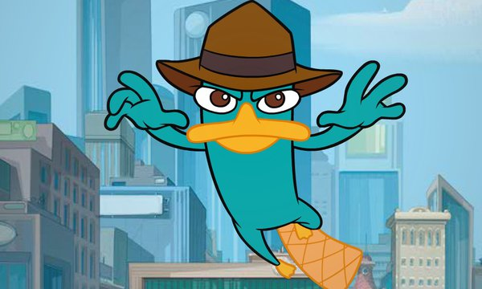

About Agent P
Agent P is a spy working for O.W.C.A., the government organisation of animal spies. His arch nemesis is called Doctor Doofenshmirtz. His first name is Perry.
Agent P in his spy costume
Agent P's Characteristics
- He's a greenish-teal platypus with yellow tangerine webbing on his back feet
- He has three dark heairs on his head
- His tail is long and salmon-orange coloured
- His eyes are dark brown, and are in an unnatural wall-eyed position, making him look mindlessly stupid
- He's known to wear a locket under his fur with a picture of him and Phineas and Ferb in it
- He wears a brown fedora (issued by O.W.C.A)
The very few times Agent P failed at his job
Agent P's job is to stop whatever evil sceme Dr. Doofenshmirtz is up to. Agent P (almost) always succeeds. Curse you Perry the Platypus!